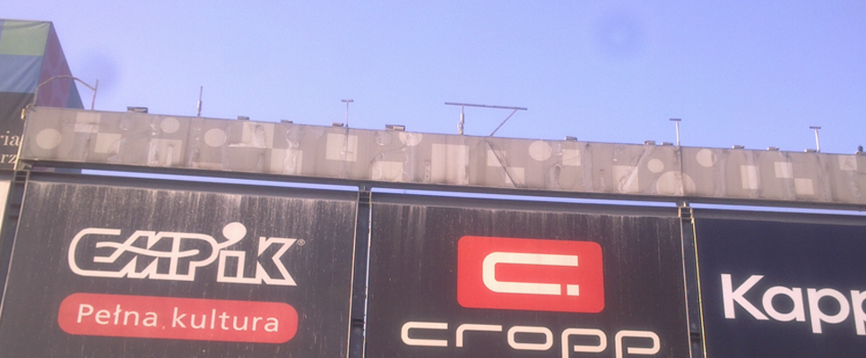
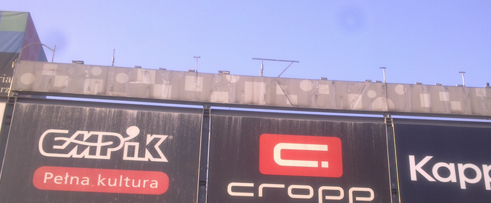

Działalność gospodarczą prowadzimy od 2003. Nasza firma specializuje się w świadczeniu usług w ramach "Pogotowia Dachowego" polegających na szybkiej naprawie dachu w przypadku jego przecieku. Dachy są szczególnie narażone na przeciekanie jeżeli są nieodpowiednio konserwowane lub źle pokryte. Pogotowie dachowe stworzyliśmy, aby szybko interweniować w nagłej sytuacji losowej Państwa dachu.

Naszym głównym atutem jest to, że reagujemy tak szybko jak to tylko możliwe włączając również weekendy. Uważamy że suchy, szczelny dach jest podstawą każdego domu. Dlatego naprawa dachu powinna zostać wykonana jak najszybciej po zauważeniu przecieku.
Zajmujemy się najmniejszymi zleceniami począwszy od drobnych zacieków takich jak nieszczelne rynny dachowe, nieszczelności przy kominach, drobne zacieki w lokalach itp, kończąc na kompleksowych remontach dachów krytych papą termozgrzewalną, blachą lub dachówką. Naszym kolejnym atutem jest fakt że do wszelkich prac wysokościowych takich jak usuwanie tynków, montaż kolców na ptaki i tym podobnych, wykorzystujemy techniki dostępu linowego.

 
